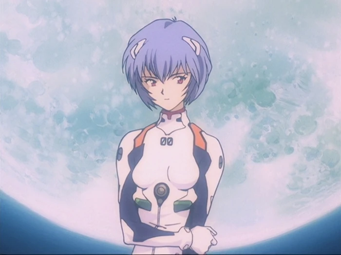

Rei Ayanami (綾波 レイ, Ayanami Rei) es la protagonista femenina de la serie de anime Neon Genesis Evangelion.
Es la primera niña y la piloto de la Unidad Evangelion-00.
No se sabe mucho sobre ella, debido a que toda su informacion fue borrada
Es la portadora del alma de Lilith el segundo angel